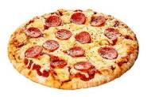

Pizza

Descripcion
Una receta de pizza bien pero bien basica.
Solo se describe como hacer la maza, la salsa va por cuenta propia.
Ingredientes
- Queso
- Salsa
- Harina con levadura
- Sal
- Aceite
- Azucar
Pasos
- Poner 200gr de harina, una cucharita de azucar, una de sal y una de aceite
- Verter agua a 35° grados centigrados y mezclar
- Dejar reposar la masas en algun lugar calido para que leude
- Estirar sobre la fuente
- Hornear 5 min, retirar del horno, colocar salsa y queso
- Hornear 15 minutos
- Servir